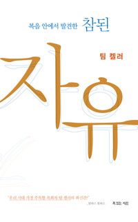

수요일 오후, 두 시간을 꽉 채운 완독 모임이었다. 서점에서 구하기 어려워 이북으로 읽었다는 소소한 수다로 열렸지만, 첫 발제부터 '나는 10이다'라는 화두가 던져지며 분위기는 금세 깊어졌다. 참석자들은 머리로 아는 복음과 마음이 따라가지 못하는 간극을 번갈아 고백했고, 진행자는 그날 새벽설교에서 다룬 '샬롬'을 가져와 죄와 우상을 '자리를 잃음'으로 풀어냈다. 바울처럼 정말 살 수 있느냐는 정직한 회의까지 다뤄진 끝에, 모임은 팀 켈러의 다음 책 『죄를 말하다』를 예고하며 긴 기도로 마무리됐다.
판결은 이미 내려졌다 — 공허와 정죄를 분리하기
첫 발제를 맡은 참석자는 책이 그리는 인간 본성의 상태 — 공허·고통·분주함 — 와, 그럼에도 '나를 정죄할 자가 없다'는 바울의 선언을 하나로 뭉뚱그리지 말고 분리해서 봐야 한다는 통찰로 문을 열었다. 복음을 알면서도 옛 습관이 바뀌지 않아 괴로운 것은, 이미 최종 판결을 내리신 재판관 앞으로 자꾸 되돌아가 다시 판결을 구하는 모습과 같다는 것이다.
이 고민은 곧장 자녀 양육으로 이어졌다. 하나님이 온전하게 지으신 자녀를 잠시 맡았을 뿐인데, 왜 내 공허와 분주함이 다 아이로부터 오는 것처럼 느껴지는가. 해결되지 않은 고통 가운데서도 '그래도 나는 10이다'라고 결론을 내리는 그 발제에, 여러 참석자가 각자의 이야기를 얹기 시작했다.
머리의 10점, 마음의 10점
한 참석자는 솔직하게 털어놓았다. 존재로는 10점이라는 걸 배워서 알고는 있지만, 마음은 여전히 양심적으로 점수를 깎게 되더라는 것이다. 문제는 그 시선이 나에게서 멈추지 않는다는 데 있었다. 내가 나를 10점으로 못 보니 남편도 자녀도 이웃도 10점으로 봐지지 않고, 그래서 늘 초조하고 불안한 게 아니냐는 자기 진단이었다.
책이 교만을 경쟁심으로 푸는 대목도 화제가 됐다. 관객이 있어야 성립하는 교만이라는 설명 앞에서 '이건 정말 인정할 수밖에 없다'는 웃음 섞인 고백이 나왔고, 다른 참석자는 논의를 한 뼘 더 밀고 갔다. 낮은 자존감을 '상처'로 치부하고 배려하려는 태도조차 하나의 판단이자 교만일 수 있으며, 자존감의 높낮이라는 것 자체가 상대평가요 나와 남의 행위에 대한 끝없는 재판의 연속이라는 것이다. 그 재판정에서 내려와 이미 내려진 판결에 따라 사는 삶으로 옮겨 가야 한다는 정리가 이어졌다.
샬롬은 제자리에 있는 것 — 우상과 자리의 신학
'그런데 왜 인간의 자아를 꼭 만족시켜야 하나요?'라는 질문에 진행자는 그날 새벽 설교에서 다룬 샬롬을 다시 꺼냈다. 손에는 손의 자리가, 컵에는 컵의 자리가 있듯 하나님이 지으신 모든 것에는 자리가 있고, 죄란 그 자리를 스스로 거부한 것이라는 풀이였다. 선악과를 따는 행동 이전에 '보암직도 하고 먹음직도 하다'고 보는 시각이 이미 타락해 있었다는 설명에, 한 참석자는 하나님의 자리에 다른 것을 올려놓으면 가치 없는 것을 올렸기에 공허할 수밖에 없다던 책의 문구가 같은 맥락으로 와닿았다고 답했다.
하나님 자리에 무엇을 올려놓든 그것은 왕이 아니기에 저도 병들고 나도 매인다는 이야기는, 마침 가족이 운영하는 매장 일을 돕기 시작한 한 참석자의 경험과 포개졌다. 종일 서서 일하다 보니 자녀를 붙들고 하던 온갖 고민이 사라졌는데, 정작 아이는 그 자리에서 일상을 잘 지내고 있더라는 것. 아이를 놓아주고 독립시키는 훈련을 하나님이 자신에게 시키고 계신 것 같다는 고백이었다.

거울의 시대에서 유리창의 시대로 — 평판, SNS, 그리고 잠
자기를 '덜 생각한다'는 게 어떤 상태인지 아직 잘 모르겠다는 물음에, 진행자는 시대 진단으로 답했다. 예전에는 거울 앞에서 한 번 매무새를 고치면 됐지만 지금은 사방의 유리창 밖에서 쉼 없이 들려오는 말들로 나를 짓는 시대라는 것. 그래서 교회 안에서 남 말과 평가를 하지 않는 것, 메신저 프로필 같은 작은 이미지 전시부터 내려놓는 것이 실제적인 훈련으로 제시됐다. 나에 대한 관심이 타인에 대한 관심으로 완전히 뒤집히는 경험으로는 선교가 꼽혔다. 돈과 시간과 몸을 구별해 드리고 나면 저절로 자기를 잊게 되더라는 것이다.
잠 이야기도 길게 이어졌다. 밤 한두 시까지 핸드폰을 놓지 못하는 세상에서, 하루를 주님께 맡기고 제때 잠드는 것 자체가 하나님을 신뢰하는 영성이라는 권면이었다. 말씀 한 구절을 붙여 놓고 그대로만 살아도 된다며, 진행자는 자신의 오랜 좌우명을 나눴다.
바울처럼 정말 살 수 있는가 — 실패를 들고 나아가라
모임 후반, 가장 정직한 질문이 나왔다. 순간의 은혜로는 되지만 그 자유가 계속 갈 수 있는가, 바울은 정말 끝까지 그랬는가. 저자는 '그렇게 될 수 있다'고 하면서 동시에 '너는 할 수 없다'고 말하는 것 같아 혼란스럽다는 것이다. 진행자는 예레미야와 시편 1편의 나무 비유로 받았다. 비가 올 때만 살아나는 나무가 아니라 샘 곁에 심긴 나무가 되는 것, 그러나 뿌리를 샘 쪽으로 '조금 더' 내려가는 과정이 우리에게 남아 있다는 것. 그래서 팀 켈러는 성공이 아니라 실패를 들고 나아가라고 한다는 말에, 혼란을 꺼냈던 참석자가 '어머' 하고 탄성을 냈다.
결과가 이미 정해진 경기의 재방송처럼, 승부가 끝났기에 오히려 오늘 하루를 만끽할 수 있다는 이야기로 논의는 갈무리됐다. 종교는 '더 해보라' 하지만 복음은 '내가 살아냈고 그 값을 너에게 줬다'고 말한다는 대비가 마지막에 놓였고, 모임은 다음 책 『죄를 말하다』를 정한 뒤 아이들과 공동체를 위한 긴 기도로 닫혔다.